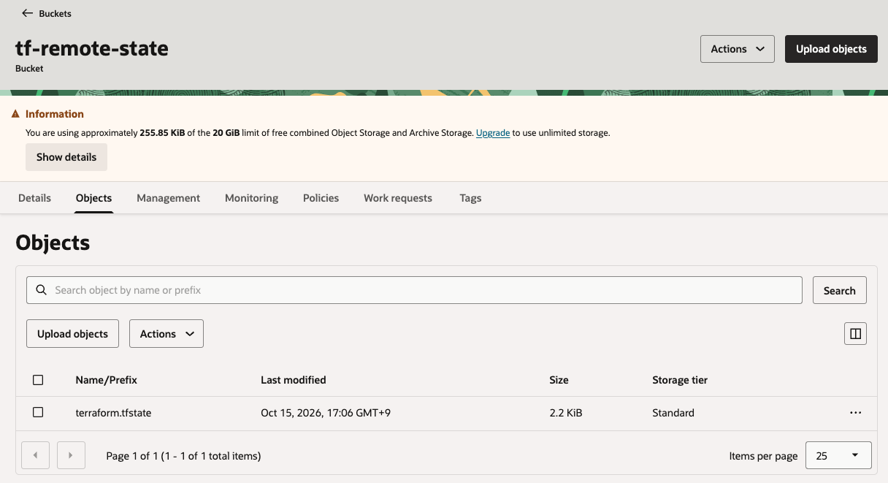

14.3.8 OCI Native Backend로 Terraform State Files 관리
여러 사용자가 함께 작업할 때 Terraform State Files을 로컬에 관리하지 않고, 별도의 저장소에 관리하게 됩니다. 더불어 이때 여러 사용자가 동시 작업을 할 수 있으므로, 동시성을 제어하기 위한 Terraform State Locking 관련 기능이 필요하게 됩니다.
OCI Resoure Manager를 사용하면, Terraform State File 저장 및 Locking 관련 기능을 제공하지만, 여기서는 순수 Terraform을 사용하고, Terraform State Files을 관리하고 할 때 사용할 수 있는 방법을 알아봅니다.
Using Object Storage for State Files 문서에서 처럼 OCI에서는 S3-Compatible Backend, HTTP Backend 사용하는 방법이 있었습니다. 2025년 5월에 OCI Object Storage를 이용하는 OCI native Backend가 출시되었으며, 현재 권장하는 방법입니다. 자체적으로 State Locking도 지원합니다. 여기서는 관련 문서를 참고하여, 해당 기능을 확인해 보고자 합니다.
Terraform으로 VCN 만들기
-
Terraform 버전 1.12 이상에 지원합니다. 설치된 버전을 확인합니다.
$ terraform -version Terraform v1.16.6 on darwin_arm64 + provider registry.terraform.io/oracle/oci v5.30.0 -
OCI Terrafrom Provider는 여러가지 인증방식을 제공합니다. 기본은 API Key 인증방식입니다. 여기서는 Terraform 공식 예제를 따라 Security Token을 사용하겠습니다. 아래와 같이 대상 리전과 인증후 저장할 프로파일 이름을 지정하여 실행합니다.
oci session authenticate --region ap-chuncheon-1 --profile-name learn-terraform실행 후 브라우저가 뜨면, 콘솔을 통해 OCI에 로그인합니다.
-
예시
$ oci session authenticate --region ap-chuncheon-1 --profile-name learn-terraform Please switch to newly opened browser window to log in! You can also open the following URL in a web browser window to continue: https://login.ap-chuncheon-1.oraclecloud.com/v1/oauth2/authorize?action=login&client_id=iaas_console&response_type=token+id_token&... Completed browser authentication process! Config written to: /Users/kildong/.oci/config Try out your newly created session credentials with the following example command: oci iam region list --config-file /Users/kildong/.oci/config --profile learn-terraform --auth security_token
-
-
토큰이 저장되고, OCI CLI가 잘 실행되는 지 확인합니다.
$ oci os ns get --profile learn-terraform --auth security_token { "data": "axmdbdcxxxxx" } $ export OCI_CLI_PROFILE="learn-terraform" $ export OCI_CLI_AUTH="security_token" $ oci os ns get { "data": "axmdbdcxxxxx" } -
테라폼 파일을 생성합니다.
mkdir learn-terraform-oci cd learn-terraform-oci touch main.tf -
main.tf를 다음과 같이 작성합니다.<your_compartment_OCID_here>에 생성할 VCN이 위치할 Compartment OCID를 입력합니다.terraform { required_providers { oci = { source = "oracle/oci" } } } provider "oci" { region = "ap-chuncheon-1" auth = "SecurityToken" config_file_profile = "learn-terraform" } resource "oci_core_vcn" "internal" { dns_label = "internal" cidr_block = "172.16.0.0/20" compartment_id = "<your_compartment_OCID_here>" display_name = "My internal VCN" } -
초기화 후 VCN을 생성합니다.
$ terraform init $ terraform apply ... Plan: 1 to add, 0 to change, 0 to destroy. Do you want to perform these actions? Terraform will perform the actions described above. Only 'yes' will be accepted to approve. Enter a value: yes oci_core_vcn.internal: Creating... oci_core_vcn.internal: Creation complete after 0s [id=ocid1.vcn.oc1.ap-chuncheon-1.amaaaaaaz236myiaptpc7rvcz2v4ueijtdluwmkxbm2f5fm4n5yzg2kjrqtq] Apply complete! Resources: 1 added, 0 changed, 0 destroyed. -
Terraform State Files가 로컬에 생성된 걸 볼 수 있습니다.
$ ls terraform.tfstate* terraform.tfstate terraform.tfstate.backup -
자원을 삭제하고, Terraform State Files을 삭제합니다.
terraform destroy rm -rf terraform.tfstate*
OCI Native Backend 사용하기
-
Object Storage Namespace를 확인합니다.
$ oci os ns get --profile learn-terraform --auth security_token { "data": "axmdbdcxxxxx" } -
콘솔에서 Object Storage Bucket을 다음 이름으로 생성합니다.
tf-remote-state -
main.tf에 OCI native backend를 추가합니다.backend "oci"에 만든 bucket 이름과 namespace 값을 지정합니다.terraform { required_providers { oci = { source = "oracle/oci" } } backend "oci" { bucket = "tf-remote-state" namespace = "axmdbdcxxxxx" region = "ap-chuncheon-1" auth = "SecurityToken" config_file_profile = "learn-terraform" } } provider "oci" { region = "ap-chuncheon-1" auth = "SecurityToken" config_file_profile = "learn-terraform" } resource "oci_core_vcn" "internal" { dns_label = "internal" cidr_block = "172.16.0.0/20" compartment_id = "<your_compartment_OCID_here>" display_name = "My internal VCN" -
다시 init를 실행합니다.
backend "oci"가 오류없이 초기화 되는 지 확인합니다.$ terraform init Initializing the backend... Successfully configured the backend "oci"! Terraform will automatically use this backend unless the backend configuration changes. Initializing provider plugins... - Reusing previous version of oracle/oci from the dependency lock file - Using previously-installed oracle/oci v9.10.0 Terraform has been successfully initialized! You may now begin working with Terraform. Try running "terraform plan" to see any changes that are required for your infrastructure. All Terraform commands should now work. If you ever set or change modules or backend configuration for Terraform, rerun this command to reinitialize your working directory. If you forget, other commands will detect it and remind you to do so if necessary. -
backend "oci"을 사용하여 VCN을 다시 생성합니다.$ terraform apply Terraform used the selected providers to generate the following execution plan. Resource actions are indicated with the following symbols: + create Terraform will perform the following actions: # oci_core_vcn.internal will be created + resource "oci_core_vcn" "internal" { + byoipv6cidr_blocks = (known after apply) ... } Plan: 1 to add, 0 to change, 0 to destroy. Do you want to perform these actions? Terraform will perform the actions described above. Only 'yes' will be accepted to approve. Enter a value: yes oci_core_vcn.internal: Creating... oci_core_vcn.internal: Creation complete after 1s [id=ocid1.vcn.oc1.ap-chuncheon-1.amaaaaaaz236myiafzkcn4rsnxxxpijbq7romu5udqgoiod6vb6wfl62hwjq] Apply complete! Resources: 1 added, 0 changed, 0 destroyed. -
Terraform State Files가 로컬에 있는 지 확인합니다.
$ ls terraform.tfstate* zsh: no matches found: terraform.tfstate* -
콘솔에서
tf-remote-state을 확인합니다.
-
OCI Native Backend를 사용하여 Terraform State Files이 OCI Object Storage Bucket로 관리할 수 있습니다.
참고
-
Solve State Locking and Token-Based Authentication Challenges with the new OCI Backend for Terraform
이 글은 개인으로서, 개인의 시간을 할애하여 작성된 글입니다. 글의 내용에 오류가 있을 수 있으며, 글 속의 의견은 개인적인 의견입니다.